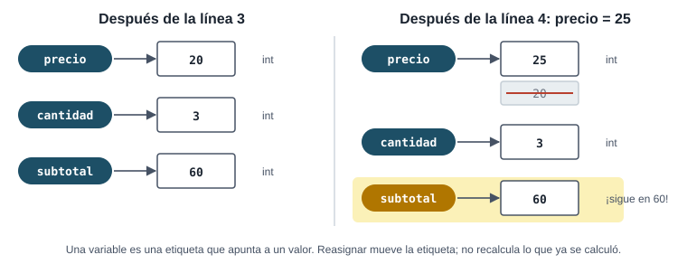
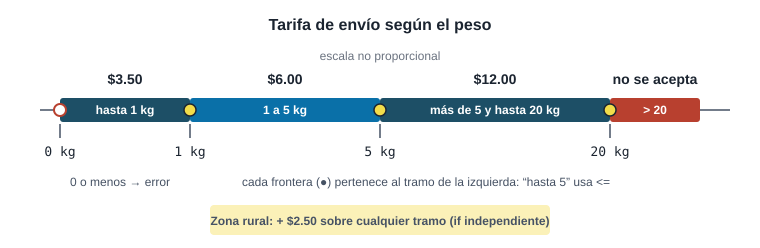
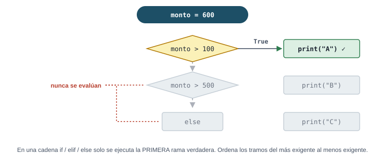

El ticket de la semana 1 solo servía para un caso. Esta semana los datos pasan a vivir en variables, el programa calcula con ellos y decide qué regla de negocio aplicar. También aprendes a desconfiar de los datos antes de usarlos.
Pregunta orientadora¿Cómo decide un programa qué tarifa cobrar, y cómo evita cobrar mal cuando los datos vienen mal?
Lecturas
PCC 2 · PCC 5 · BOU 2
Proyecto
Preparar Fase 2
Evaluación
Control 1 (esta semana)
Cómo usar esta guía
Antes de claseLee PCC 2 y 5 y BOU 2. Responde el checkpoint.
Durante el laboratorioEl taller es de casos borde: ten a mano la sección de validación defensiva.
Después de claseTrazas y ejercicios; el E5 es una auditoría como las de clase.
Control 1Esta semana. Repasa la lista de “puedo…”. Sin IA.
Pregunta
→
Exploración
→
Implementación
→
Resultado
→
Interpretación
→
Verificación
Qué puedes usar esta semana
Sí, desde ahora
Todo lo de la semana 1
Variables, constantes por convención (TASA_IVA)
Tipos int, float, str, bool; type()
Operadores + - * / // % **; round()
Conversiones int(), float(), str()
Métodos de texto: upper, lower, title, strip, replace, isdigit…; len()
f-strings: f"{total:,.2f}"
== != < <= > >=, and, or, not, in con texto
if, if-else, if-elif-else, anidados
Todavía no
input() → semana 3. Por ahora los datos se escriben en el código (así también es más fácil probar casos).
Bucles while/for → semana 3
Funciones propias def → semana 4
Listas → semana 5 (PCC 5 trae una sección de if con listas: déjala para entonces)
try/except → semana 7. Esta semana la defensa se hace con if.
La división / siempre devuelve float, incluso 10 / 5 da 2.0. Para la división entera se usa //.
Hay 17 cajas y cada camión lleva 5. 17 // 5 y 17 % 5 valen…
// es el cociente entero y % el residuo. Para saber cuántos camiones se necesitan harían falta 4: los 3 llenos más uno para las 2 cajas que sobran.
¿Qué imprime print("5" + "5")?
Con texto, +concatena. Es un error clásico cuando un número llega como texto (como pasará con input() en la semana 3): hay que convertir con int() o float() antes de sumar.
¿Qué devuelve 0.1 + 0.2 == 0.3?
Los float se guardan en binario y muchos decimales no se representan exactamente: 0.1 + 0.2 da 0.30000000000000004. Con dinero, redondea con round(x, 2) al presentar, y nunca compares flotantes con == sin redondear.
¿Cuál es la diferencia entre = y ==?
if total = 100: es un SyntaxError. En la condición de un if siempre va una comparación.
Con monto = 600, ¿qué imprime este código?
if monto > 100:
print("A")
elif monto > 500:
print("B")
else:
print("C")
En una cadena if-elif se ejecuta solo la primera rama verdadera. Como 600 > 100, entra en A y el resto se ignora: la rama B es inalcanzable. Con tramos, ordena del más exigente al menos exigente.
edad = 17 y autorizado = True. ¿Cuánto vale edad >= 18 or autorizado?
or es verdadero si al menos una parte lo es. edad >= 18 es False, pero autorizado es True.
¿Qué imprime print(f"${1234.5:,.2f}")?
Dentro de las llaves de una f-string, :,.2f significa “separador de miles y 2 decimales”. Es el formato estándar para mostrar dinero.
¿Cuál nombre de variable es válido y sigue PEP 8?
No puede empezar con número; el guion se interpreta como resta. TotalVentas es válido pero PEP 8 reserva ese estilo para clases (semana 8). Variables: minusculas_con_guion_bajo.
¿Qué pasa con int("12.5")?
int() sobre texto exige dígitos de un entero. float("12.5") sí funciona, e int(12.5) (un número, no texto) trunca a 12. Por eso se valida el texto antes de convertir.
Variables, tipos y aritmética del dinero
En palabras simples
Una variable es una caja con etiqueta: la etiqueta es el nombre (precio) y adentro va el valor (12.50). El tipo dice qué clase de cosa hay en la caja: int para contar unidades, float para dinero y medidas, str para texto y bool para sí o no.
Caso: el ticket que se recalcula solo
Pregunta
La Distribuidora La Ceiba quiere que el ticket de la semana 1 funcione para cualquier precio y cantidad, no solo para uno. ¿Cómo?
Exploración
Una variable es un nombre que apunta a un valor. Si el valor cambia, todo lo que se calcula a partir de ella cambia en la siguiente ejecución.
Cada valor tiene un tipo: 4 es int, 12.50 es float, "aceite" es str, True es bool.
Las tasas que no cambian durante el programa son constantes: por convención, en MAYÚSCULAS. Si el IVA cambia por ley, se modifica en un solo lugar.
Implementación
# Ticket de la Distribuidora La Ceiba, versión con variables
TASA_IVA = 0.13
producto = "aceite vegetal 1 L"
precio_unitario = 12.50
cantidad = 4
subtotal = precio_unitario * cantidad
iva = subtotal * TASA_IVA
total = subtotal + iva
print(f"Producto: {producto.title()}")
print(f"{cantidad} x ${precio_unitario:.2f}")
print(f"Subtotal: ${subtotal:,.2f}")
print(f"IVA 13 %: ${iva:,.2f}")
print(f"Total: ${total:,.2f}")
print(type(cantidad), type(precio_unitario), type(producto))
Cambia cantidad = 4 por cantidad = 7 y vuelve a ejecutar: el ticket entero se recalcula. Ese es el salto de la semana 1 a la 2. Nota que int × float da float: Python “sube” al tipo más general.
Operadores que vas a necesitar en problemas de negocio:
Prueba con cantidad = 0: ¿el total da 0? ¿Tiene sentido emitir ese ticket? (Eso lo resuelve la validación.)

Esto es lo que ocurre en la traza 1: reasignar precio no cambia subtotal.
Dinero y float
print(0.1 + 0.2) muestra 0.30000000000000004, y round(2.675, 2) da 2.67, no 2.68: el número guardado es en realidad un poco menor que 2.675. Para este curso basta con redondear al presentar y no comparar flotantes con ==. En sistemas contables reales se trabaja en centavos enteros (5650 en vez de 56.50) o con tipos decimales exactos.
Adelanto opcional · semana 10 (C#)
En Python una variable puede cambiar de tipo: cantidad = 4 y luego cantidad = "cuatro" no da error hasta que intentas multiplicar. En C# el tipo se declara y no cambia: int cantidad = 4; y asignarle texto no compila. Por eso la semana 10 se llama “tipado estático”. No lo necesitas para el Control 1.
Decisiones: if / elif / else
En palabras simples
Un if es un portero: si cumples la condición, pasas. Una cadena if / elif / else es una fila de ventanillas: te atiende la primera que te acepta y las demás ni te ven. Por eso el orden importa.
Caso: tarifa de envío por tramos
Pregunta
La Ceiba cobra el envío según el peso: hasta 1 kg, $3.50; más de 1 y hasta 5 kg, $6.00; más de 5 y hasta 20 kg, $12.00. No acepta paquetes de más de 20 kg. A zona rural se le suman $2.50. ¿Cuánto se cobra por un paquete?
Exploración
Hay tramos (una sola cadena if-elif-else) y un recargo independiente (un if aparte, porque se suma a cualquier tramo).
Las fronteras son 1, 5 y 20. “Hasta 1 kg” incluye el 1 → <=.
Hay entradas que no tienen sentido: peso 0 o negativo. Se rechazan antes de calcular.

Los tramos como recta numérica. Las fronteras (1, 5 y 20 kg) son justo donde hay que probar.
Implementación
RECARGO_RURAL = 2.50
PESO_MAXIMO = 20
peso_kg = 1.01
zona = "rural"
if peso_kg <= 0:
print("Error: el peso debe ser mayor que 0.")
elif peso_kg > PESO_MAXIMO:
print(f"No se aceptan paquetes de más de {PESO_MAXIMO} kg.")
else:
if peso_kg <= 1:
tarifa = 3.50
elif peso_kg <= 5:
tarifa = 6.00
else:
tarifa = 12.00
if zona == "rural":
tarifa = tarifa + RECARGO_RURAL
print(f"Tarifa de envío: ${tarifa:.2f}")
Resultado
Tarifa de envío: $8.50
Interpretación
1.01 kg cae en el segundo tramo ($6.00) y la zona rural suma $2.50. Observa la estructura: primero se descartan los casos inválidos (cláusulas de guarda), y solo en el else se hace el cálculo normal. Así el cálculo nunca trabaja con datos imposibles.
Cuándo usar cada forma:
Una cadena if-elif-else cuando las opciones son excluyentes (un paquete está en un solo tramo).
Varios if independientes cuando las condiciones se acumulan (recargo rural, recargo por fragilidad, recargo por urgencia…).
Omitir el else solo cuando “no hacer nada” es una respuesta válida.

Por qué importa el orden de los elif (pregunta 6 del checkpoint y ejercicio E5).
Verificación: matriz de casos borde
Un caso por tramo no alcanza. Prueba justo en cada frontera y justo después: 0, 0.5, 1, 1.01, 5, 5.01, 20, 20.01, y cada uno en zona urbana y rural. Esa lista es la base de la traza 2 y del entregable de la Fase 2 del proyecto.
Expresiones booleanas y operadores lógicos
Expresión
Es verdadera cuando…
Ejemplo de negocio
a and b
ambas lo son
saldo >= monto and cuenta_activa
a or b
al menos una lo es
es_vip or compras_mes >= 10
not a
a es falsa
not bloqueado
"@" in correo
el texto contiene @
validación mínima de un correo
1 <= peso <= 5
el valor está en el rango
Python permite encadenar comparaciones
Evaluación en cortocircuito
En a and b, si a es falsa Python ni mira b. Eso permite escribir cantidad != 0 and total / cantidad > 10 sin riesgo de dividir entre cero: si la cantidad es 0, la división nunca se ejecuta.
Validación defensiva
En palabras simples
Programar a la defensiva es como el cajero que revisa el billete antes de dar el vuelto: primero verifica que el dato tenga sentido (no negativo, no vacío, del tipo correcto) y solo después calcula.
Programar a la defensiva es asumir que los datos pueden venir mal y decidir qué hacer antes de que causen un cobro erróneo o un error. Esta semana la herramienta es el if (el manejo de excepciones con try llega en la semana 7).
Caso: el acceso a la caja registradora
Pregunta
Un cajero intenta entrar al sistema. ¿Se le permite? Reglas: la cuenta debe estar activa, no debe tener 3 o más intentos fallidos, y usuario y clave deben coincidir. El usuario no distingue mayúsculas; la clave sí.
Exploración
El orden de las verificaciones es una decisión de seguridad: una cuenta bloqueada no debe entrar aunque la clave sea correcta.
El usuario puede venir con espacios o mayúsculas: se normaliza con strip() y lower().
El mensaje de error no debe revelar si falló el usuario o la clave (le daría pistas a un atacante).
Implementación
USUARIO_VALIDO = "cajero01"
CLAVE_VALIDA = "Ceiba2026"
MAX_INTENTOS = 3
# Datos del intento (en la semana 3 vendrán de input())
usuario = " Cajero01 "
clave = "Ceiba2026"
intentos_fallidos = 2
cuenta_activa = True
usuario = usuario.strip().lower()
if not cuenta_activa:
print("Cuenta desactivada. Contacte al administrador.")
elif intentos_fallidos >= MAX_INTENTOS:
print("Cuenta bloqueada por intentos fallidos.")
elif usuario == USUARIO_VALIDO and clave == CLAVE_VALIDA:
print("Acceso concedido.")
else:
print("Usuario o clave incorrectos.")
Resultado
Acceso concedido.
Interpretación
Aunque el usuario llegó como " Cajero01 ", la normalización lo convirtió en "cajero01". Con 2 intentos fallidos aún puede entrar; con 3, no, aunque la clave sea correcta. Guardar la clave dentro del código solo es aceptable en un ejercicio: en un sistema real nunca se escribe una contraseña en el código ni se sube a GitHub.
Verificación
Cambia un dato por vez y predice la salida antes de ejecutar: cuenta_activa = False; intentos_fallidos = 3 con clave correcta; clave = "ceiba2026" (minúscula). Si tu predicción falla, hay algo del orden de las ramas que no entendiste.
Validar texto antes de convertirlo
Cuando un dato llega como texto (de un archivo o, desde la semana 3, del teclado), float("12,5") o int("") detienen el programa con ValueError. Sin try, se revisa primero:
monto_texto = "150.75" # prueba también: "", "-5", "15a", "1.2.3"
# Quita a lo sumo UN punto decimal y revisa que lo demás sean dígitos
if monto_texto.replace(".", "", 1).isdigit():
monto = float(monto_texto)
if monto > 0:
print(f"Monto válido: ${monto:,.2f}")
else:
print("El monto debe ser mayor que cero.")
else:
print(f"'{monto_texto}' no es un monto válido.")
Monto válido: $150.75
Límite de esta técnica
Este truco rechaza negativos ("-5" tiene un signo que no es dígito) y no acepta formatos como "1,500.00". Es suficiente para el laboratorio; en la semana 7 verás la forma idiomática: intentar convertir y capturar el ValueError.
Tablas de traza
Traza 1 · Valor y tipo después de cada línea
Escribe el valor y el tipo (int, float, str, bool) de la variable asignada en cada línea. Para texto, escribe el contenido sin comillas.
Cambiar precio a 25 no recalcula subtotal: sigue en 60. Una asignación calcula el valor en ese momento; no es una fórmula de hoja de cálculo que se actualiza sola.
Traza 2 · Casos borde de la tarifa de envío
Usa envio.py. Escribe la tarifa como número (8.5) o, si no hay tarifa, error o no acepta.
peso_kg
zona
Tarifa o mensaje
0.5
urbana
1
urbana
1.01
rural
5
rural
20
urbana
20.5
urbana
0
urbana
Traza 3 · ¿Qué devuelve cada expresión?
Expresión
Resultado
10 / 5
17 % 5
2 ** 3
"IVA" + "13"
int(12.9)
-7 // 2
not (3 > 2 and 2 > 5)
"ceiba".title()
¿Por qué -7 // 2 da -4 y no -3?
// redondea hacia abajo (hacia menos infinito), no hacia cero. -3.5 hacia abajo es -4. Con números positivos no se nota; con saldos negativos sí.
Ejercicios
Todos se resuelven con variables escritas en el código. Para probar varios casos, cambia los valores y vuelve a ejecutar.
E1 · De pseudocódigo a Python
traducción · ★
Traduce a Python el algoritmo de la factura de la semana 1 (descuento del 10 % si el subtotal es ≥ $50, luego IVA del 13 %). Verifica tu programa con los tres casos de la traza 1 de esa semana.
Verificación: con 8 × 3 debe dar $27.12 y con 30 × 2, $61.02, igual que la traza de la semana 1.
E2 · Impuesto progresivo por tramos
tramos + economía · ★★
Una tabla simplificada y ficticia de retención sobre salario mensual:
Hasta $500.00: no paga.
De $500.01 a $1,000.00: 10 % sobre el exceso de $500.
Más de $1,000.00: $50.00 fijos + 20 % sobre el exceso de $1,000.
Calcula la retención y la tasa efectiva (retención / salario). Prueba con 500, 800, 1000 y 1500. ¿Es cierto que “si me suben el sueldo y paso al tramo siguiente, gano menos”?
Pista
“Sobre el exceso” significa (salario - 500) * 0.10, no salario * 0.10. Cuidado con la tasa efectiva cuando la retención es 0.
Interpretación: no, subir de tramo no reduce el ingreso neto: la tasa mayor se aplica solo al exceso. Por eso la tasa efectiva crece suavemente. Ese es el concepto de tasa marginal vs. tasa efectiva.
Verificación: en las fronteras los tramos deben “empatar”: con 1000 la segunda fórmula da (1000 − 500) × 0.10 = 50 y la tercera daría 50 + 0 = 50. Si no empatan, hay un error en la tabla o en el código.
E3 · Reglas para crear una clave
autenticación · ★★
Al crear un usuario de caja, la clave debe: tener al menos 8 caracteres, contener solo letras y dígitos, y tener al menos una letra y al menos un dígito. Sin bucles, escribe la validación e informa qué regla falló. Prueba con "ceiba2026", "ceibaceiba", "12345678", "ceiba 2026" y "Ceiba26".
Pista
Si un texto es isalnum() (solo letras y dígitos) pero no es isdigit() (no todo son dígitos) y no es isalpha() (no todo son letras), entonces tiene de ambos.
Solución
clave = "ceiba2026"
if len(clave) < 8:
print("Rechazada: debe tener al menos 8 caracteres.")
elif not clave.isalnum():
print("Rechazada: solo se permiten letras y dígitos.")
elif clave.isdigit():
print("Rechazada: debe incluir al menos una letra.")
elif clave.isalpha():
print("Rechazada: debe incluir al menos un dígito.")
else:
print("Clave aceptada.")
Clave
Resultado
ceiba2026
aceptada
ceibaceiba
falta un dígito
12345678
falta una letra
ceiba 2026
tiene un espacio (no es alfanumérica)
Ceiba26
solo 7 caracteres
Verificación: cada caso de prueba hace fallar exactamente una regla distinta. Así, si alguno da el mensaje equivocado, sabes qué rama revisar.
E4 · Desglose del vuelto
// y % · ★
Una caja debe dar $87 de vuelto en billetes de $20, $10, $5 y $1, usando la menor cantidad de billetes. Calcula cuántos de cada uno usando solo // y %.
Solución
vuelto = 87
billetes_20 = vuelto // 20
resto = vuelto % 20
billetes_10 = resto // 10
resto = resto % 10
billetes_5 = resto // 5
billetes_1 = resto % 5
print(f"$20: {billetes_20} $10: {billetes_10} $5: {billetes_5} $1: {billetes_1}")
$20: 4 $10: 0 $5: 1 $1: 2
Verificación: 4×20 + 0×10 + 1×5 + 2×1 = 87 ✔. Prueba también 0, 20 y 99. En la semana 3 podrás hacer esto con un bucle en vez de repetir el patrón.
E5 · Auditoría: descuentos con fallas de cobertura
auditoría · ★★★
Regla del negocio: desde $1,000 o si el cliente es VIP, 15 %; desde $500, 10 %; más de $100, 5 %; lo demás, sin descuento. Este código “parece” funcionar. Encuentra todas las fallas con casos de prueba concretos.
monto = 500
es_vip = False
if monto > 100:
descuento = 0.05
elif monto > 500:
descuento = 0.10
elif monto > 1000 or es_vip:
descuento = 0.15
print(f"Descuento: {descuento:.0%}")
Pista
Prueba con 50, 500, 600, 1000 y con un VIP que compra $50. Busca: ramas inalcanzables, fronteras con > donde la regla dice “desde”, y casos donde descuento nunca se asigna.
Solución
Orden: cualquier monto > 100 entra en la primera rama, así que el 10 % y el 15 % son inalcanzables. Con 600 da 5 % en vez de 10 %.
Fronteras: “desde $500” incluye el 500 → >= 500, no > 500. Lo mismo con 1000.
Falta el else: con monto = 50 ninguna rama asigna descuento y la última línea lanza NameError.
VIP: un VIP que compra $50 nunca llega a su rama.
monto = 500
es_vip = False
if monto >= 1000 or es_vip:
descuento = 0.15
elif monto >= 500:
descuento = 0.10
elif monto > 100:
descuento = 0.05
else:
descuento = 0
print(f"Descuento: {descuento:.0%}")
monto
VIP
Original
Corregido
50
no
NameError
0 %
50
sí
NameError
15 %
100
no
NameError
0 %
500
no
5 %
10 %
1000
no
5 %
15 %
Lección: el código original pasa si solo lo pruebas con 500 “a ojo”. Las fallas aparecen únicamente con casos elegidos a propósito: por debajo, en y por encima de cada frontera, más cada condición especial. Esto es la “auditoría inversa” que se practica en clase con código generado por IA.
Práctica intensiva
Primero ejercicios rápidos que se corrigen solos, luego problemas tipo examen. Cada problema trae su tabla de casos: tu programa está bien solo si los pasa todos.
Ejercicios rápidos · ¿Cuánto vale?
Escribe el resultado exacto de cada expresión (texto sin comillas, booleanos como True o False). Sin ejecutar.
Código
Tu respuesta
15 % 4
2 + 3 * 4
(2 + 3) * 4
10 // 3 * 3
"ab" * 2
int("7") + 3
str(7) + "3"
5 > 3 and 2 > 4
not 0 == 0
round(3.14159, 2)
len("Ceiba")
3 == 3.0
Problemas tipo examen
P1 · Comisión con bono por meta
tramos + condición compuesta · ★★★
Comisión sobre las ventas del mes: menos de $2,000 → 2 %; desde $2,000 hasta antes de $5,000 → 4 %; desde $5,000 → 6 %. Además, un bono de $50 si el vendedor superó su meta y sus devoluciones no pasan del 5 % de sus ventas. Ventas en cero o negativas son un error.
Tu programa debe cumplir estos casos de prueba:
Ventas
Meta
Devoluciones
Comisión
Bono
Total
$5,200
$5,000
$150
$312.00
$50
$362.00
$5,200
$5,000
$300
$312.00
$0
$312.00
$1,999.99
$1,500
$0
$40.00
$50
$90.00
$2,000
$2,500
$0
$80.00
$0
$80.00
$0
$100
$0
—
—
error
Pista
Dos decisiones independientes: una cadena if/elif/else para la tasa y un if aparte para el bono, con and. ¿Por qué $300 de devoluciones quita el bono? 5 % de 5,200 es 260.
Solución
ventas = 5200.00
meta = 5000.00
devoluciones = 150.00
if ventas <= 0:
print("Error: las ventas deben ser positivas.")
else:
if ventas >= 5000:
tasa = 0.06
elif ventas >= 2000:
tasa = 0.04
else:
tasa = 0.02
comision = ventas * tasa
if ventas > meta and devoluciones <= ventas * 0.05:
bono = 50
else:
bono = 0
print(f"Comisión: ${comision:,.2f}")
print(f"Bono: ${bono:,.2f}")
print(f"Total a pagar: ${comision + bono:,.2f}")
Comisión: $312.00
Bono: $50.00
Total a pagar: $362.00
Verificación: cambia las tres variables por cada fila de la tabla y compara. Fíjate en $1,999.99: queda en el tramo del 2 % por un centavo.
P2 · Factura de energía por bloques
tramos acumulativos · ★★★
Tarifa ficticia: cargo fijo $3.00; los primeros 100 kWh a $0.20; del 101 al 200 a $0.25; lo que pase de 200 a $0.32. Los hogares que consumen 99 kWh o menos reciben un subsidio del 50 % sobre la energía (no sobre el cargo fijo). Calcula el total.
Tu programa debe cumplir estos casos de prueba:
Consumo (kWh)
Energía
Total
0
$0.00
$3.00
99
$9.90
$12.90
100
$20.00
$23.00
150
$32.50
$35.50
200
$45.00
$48.00
250
$61.00
$64.00
−5
—
error
Pista
“Por bloques” significa que cada tramo se cobra a su propio precio: con 150 kWh, los primeros 100 van a $0.20 y solo los 50 restantes a $0.25.
Solución
CARGO_FIJO = 3.00
consumo = 150 # kWh del mes
if consumo < 0:
print("Error: el consumo no puede ser negativo.")
else:
if consumo <= 100:
energia = consumo * 0.20
elif consumo <= 200:
energia = 100 * 0.20 + (consumo - 100) * 0.25
else:
energia = 100 * 0.20 + 100 * 0.25 + (consumo - 200) * 0.32
if consumo <= 99: # subsidio: 50 % de la energía
energia = energia * 0.5
total = CARGO_FIJO + energia
print(f"Energía: ${energia:.2f} Total de la factura: ${total:.2f}")
Energía: $32.50 Total de la factura: $35.50
Interpretación económica: consumir 100 kWh cuesta $23.00, pero 99 kWh cuesta $12.90. Un solo kWh más duplica la factura: es un “efecto escalón” del subsidio. Un analista lo detecta con los casos de frontera y se lo reporta al negocio.
P3 · Cupón o descuento VIP (no acumulables)
texto + decisiones anidadas · ★★★
El cliente escribe un cupón (puede venir con espacios o minúsculas). CEIBA10 da 10 % si la compra es de al menos $30; ENVIO descuenta $4.50; un cupón vacío no hace nada; cualquier otro es inválido. Los clientes VIP tienen 5 % siempre. Cupón y VIP no se acumulan: se aplica el mayor.
Tu programa debe cumplir estos casos de prueba:
Cupón
Subtotal
VIP
Descuento
Total
" ceiba10 "
$50
no
$5.00
$45.00
CEIBA10
$25
no
$0.00 (+ aviso de mínimo)
$25.00
envio
$60
sí
$4.50
$55.50
CEIBA10
$200
sí
$20.00
$180.00
XYZ
$40
sí
$2.00 (+ aviso)
$38.00
Pista
Normaliza primero con strip().upper(). Calcula los dos descuentos por separado y al final elige el mayor con un if.
Solución
codigo = " ceiba10 "
subtotal = 50.00
es_vip = False
codigo = codigo.strip().upper()
if es_vip:
descuento_vip = subtotal * 0.05
else:
descuento_vip = 0
if codigo == "":
descuento_cupon = 0
elif codigo == "CEIBA10":
if subtotal >= 30:
descuento_cupon = subtotal * 0.10
else:
descuento_cupon = 0
print("CEIBA10 requiere una compra mínima de $30.")
elif codigo == "ENVIO":
descuento_cupon = 4.50
else:
descuento_cupon = 0
print(f"El cupón '{codigo}' no existe.")
# No son acumulables: se aplica el beneficio mayor
if descuento_vip > descuento_cupon:
descuento = descuento_vip
else:
descuento = descuento_cupon
print(f"Descuento aplicado: ${descuento:.2f} Total: ${subtotal - descuento:.2f}")
Descuento aplicado: $5.00 Total: $45.00
Verificación: con $200 y VIP, el cupón da $20 y el VIP $10: gana el cupón. Con $60 y VIP, el VIP da $3 y ENVIO $4.50: gana ENVIO. Cada fila prueba una rama distinta.
Proyecto integrador · Preparar la Fase 2
No hay entregable esta semana, pero la Fase 2 (semana 3) pide un diagrama de flujo del proceso central y una matriz de al menos 5 casos de borde. Lo de esta semana es exactamente la materia prima.
Tareas sugeridas para el equipo
Preguntas de defensa
¿Qué tipo de dato usan para el dinero y qué riesgo tiene?
float, que puede acumular errores de representación (0.1 + 0.2). Lo mitigamos redondeando a 2 decimales al presentar y sin comparar flotantes con ==. Un sistema contable real usaría centavos enteros o decimales exactos.
En su regla principal, ¿qué pasa exactamente en la frontera?
Debes poder decir el valor exacto (“con $50.00 sí aplica el descuento porque la regla dice ‘desde’, por eso usamos >=”) y mostrar el caso de prueba que lo comprueba.
¿Por qué el orden de los elif importa en su código?
Porque solo se ejecuta la primera rama verdadera. Si una condición más amplia va primero, las más específicas quedan inalcanzables. Ordenamos del tramo más exigente al menos exigente.
¿Qué validan antes de calcular y por qué en ese orden?
Primero lo que hace imposible el cálculo (valores vacíos, negativos, fuera de rango), luego las reglas de negocio. Así el cálculo nunca recibe datos imposibles y el usuario recibe un mensaje claro.
¿Por qué TASA_IVA está en mayúsculas?
Es una constante por convención (PEP 8): indica que no debe cambiar durante la ejecución. Si la tasa cambia por ley, se modifica en un único lugar.
Control 1
Según el programa, el Control 1 es esta semana. Es individual y sin IA. El temario exacto lo confirma el docente en Moodle; usa esta lista junto con la de la semana 1.
Fuentes
[PCC] Matthes, E. (2023). Python Crash Course, 3.ª ed. Caps. 2 y 5.
[BOU] Bouna, P. (2022). Fundamentals of Programming Using Flowchart and Pseudocode. Cap. 2.
Python Software Foundation. Tutorial de Python (en español), secciones 3 y 4.1.